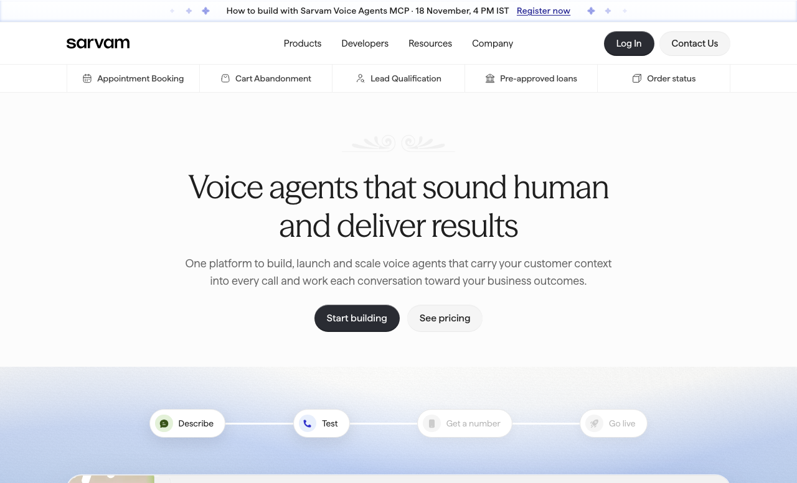
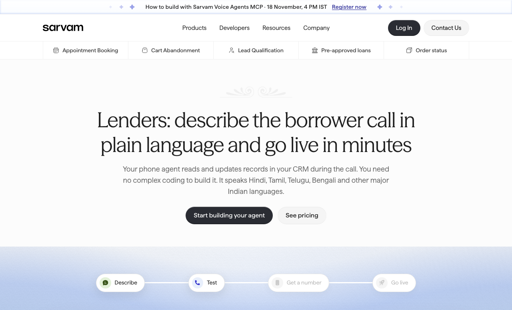

| Part | Baseline | Variant |
|---|---|---|
| H1 | Voice agents that sound human and deliver results | Lenders: describe the borrower call in plain language and go live in minutes |
| Sub-line | One platform to build, launch and scale voice agents that carry your customer context into every call and work each conversation toward your business outcomes. | Your phone agent reads and updates records in your CRM during the call. You need no complex coding to build it. It speaks Hindi, Tamil, Telugu, Bengali and other major Indian languages. |
| Button | Start building | Start building your agent (goes to: console) |